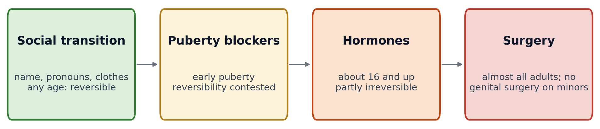
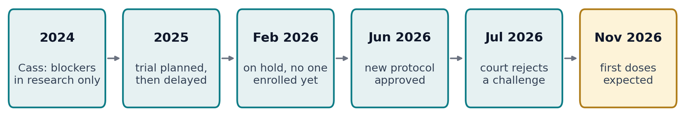
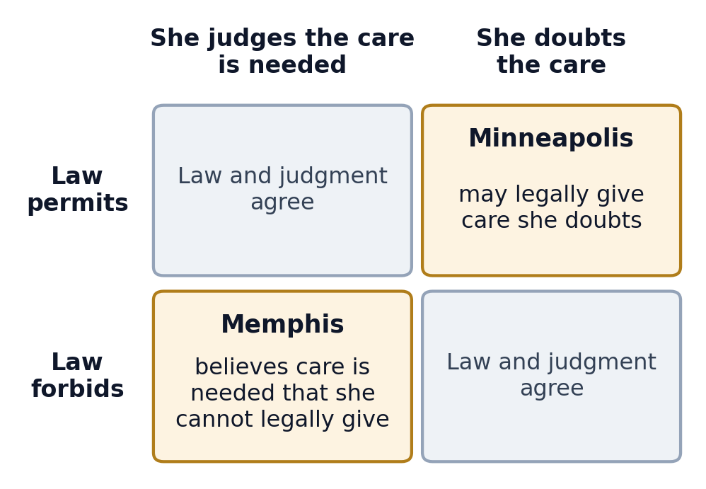

Lecture 11 — Gender, Identity & Disability
Part A: Gender-Affirming Care — Deciding Under Uncertainty
1 A Decision in Room 4
1.1 A Case to Sit With
Riley is 15. Assigned female at birth, he has identified as a boy for three years. His dysphoria has worsened since puberty began, with one ER visit for self-harm. The gender clinic recommends puberty blockers. His mother agrees. His father is afraid: “He’s fifteen. How can anyone know?”
You are the clinic nurse, and both parents ask what you think.
- Think of a big decision made by you, or for you, around age 15. Looking back, who should have had the final say?
- Whose judgment should carry the most weight here: Riley’s, the parents’, the clinicians’, or the state’s? What earns that weight?
More of the case: Riley has socially transitioned at school, with a new name, and has been consistent and insistent. Since puberty began his grades have failed and he has withdrawn. The clinic’s recommendation came after eighteen months of assessment. His father is opposed, not hostile but afraid.
His father is not a bigot, his mother is not reckless, and the clinicians are not ideologues. They disagree about something narrower and harder: what to do when you cannot be sure.
The evidence on gender medicine for minors is genuinely low-certainty, and low-certainty evidence does not automatically favor either side. “Don’t give irreversible treatment without strong proof it helps” and “don’t withhold possibly life-saving treatment without strong proof it harms” are both appeals to caution, pointed in opposite directions.
1.2 Today
Everyone in Room 4 wants Riley to flourish. They disagree about one question: what should medicine, families, and the state do when the evidence is low-certainty and the stakes are high in both directions?
By the end of Part A, you will be able to:
- Define sex, gender identity, and gender dysphoria, and describe the care pathway step by step.
- State what the systematic reviews found, and why low-certainty evidence licenses neither side’s default.
- Explain how the philosophers, the authorities, and the courts divide, and what U.S. v. Skrmetti (2025) decided.
Every position gets its strongest version. The conclusions stay yours.
2 What Care Involves
2.1 Three Words That Do Different Jobs
| Term | What it names |
|---|---|
| Sex | the biological package (chromosomes, gonads, anatomy) recorded at birth |
| Gender identity | a person’s internal, persistent sense of being male, female, or neither |
| Gender dysphoria | a clinical diagnosis: marked distress from the mismatch between the two, lasting at least six months |
Being transgender is not a disorder in the DSM. Distress is what medicine treats, and how best to treat it is the whole dispute.
Sloppy vocabulary wrecks this conversation faster than any other in the course, so we fix terms first. Note too that the diagnosis describes the present; it is not a prediction.
2.2 The Referral Surge, and Its Two Readings
England’s youth gender service went from 210 referrals in 2011/12 to over 2,700 a year by 2018/19, now mostly birth-registered females in their early teens (Cass 2024).
- Visibility: stigma fell, so people suffering in silence came forward.
- A new population: today’s patients differ so much from those first studied that old evidence may not transfer.
Nobody has shown which reading is right.
2.3 The Pathway, by Age and Reversibility

- Each arrow is a decision point, not a conveyor belt. Whether it works like one is itself contested.
- Public debate blurs a 9-year-old’s pronouns, a 15-year-old’s hormones, and surgery: three decisions with different reversibility, evidence, and ethics.
Getting these facts right is an ethical duty.
2.4 What Puberty Blockers Are

- Puberty blockers (GnRH agonists) pause the hormones of puberty. They were developed for precocious puberty and used for decades.
- The Dutch protocol (Amsterdam, 1990s) offered that pause to carefully screened adolescents, buying time before any permanent step.
- The core dispute: do results from that small, tightly selected group transfer to today’s very different patients?
Reversible chemistry is not the same as a reversible path.
Precocious puberty means, for example, a seven-year-old entering puberty: stop the drug, and puberty proceeds. The original Dutch group had childhood-onset dysphoria and stable, supportive families. Open questions remain about bone density and brain development during a years-long pause, and that is where the evidence fight begins.
3 The Evidence
3.1 What the Systematic Reviews Found
The University of York ran systematic reviews for England’s Cass Review. Their results matched earlier reviews in Sweden and Finland (Cass 2024).
- Puberty blockers: no consistent, reliable evidence of mental-health benefit. The studies are small, uncontrolled, and short.
- Hormones: some evidence of benefit, graded low or very low certainty.
- Hilary Cass’s summary: an area of “remarkably weak evidence.”
Important
Low certainty does not mean “no effect.” The true effect may differ substantially from what studies suggest, in either direction.
These reviews use the same machinery you met in research ethics. Much of pediatrics runs on low-certainty evidence. The usual reason to set a higher bar here: these treatments are partly irreversible and the patients are minors.
3.2 Two Numbers Both Sides Claim
| The number | Read as success | Read as a warning |
|---|---|---|
| 87–98% of teens who start blockers go on to hormones (Brik et al. 2020; Carmichael et al. 2021) | screening works: those selected really needed transition | the “pause” is an on-ramp; consent to blockers is consent to more |
| About 1% regret, a figure often cited from older studies of adults | regret is rare | those adults were screened under stricter rules, many were lost to follow-up, and today’s teens may differ |
Same numbers, opposite lessons. What would settle it is the missing comparison: what would have happened without treatment.
3.3 The Trial That Couldn’t Start
Why not just run a randomized trial? Blinding is impossible (patients know whether puberty stopped), equipoise is disputed in both directions, and whoever picks the outcome measure half-decides the result.

“More research,” which every side endorses, is itself ethically hard. And “wait for evidence” is also a decision.
3.4 Two Defaults, One Evidence Base
| The precaution default | The access default | |
|---|---|---|
| The rule | no irreversible treatment for minors without strong evidence of benefit | no withholding treatment from suffering patients without strong evidence of harm |
| Treats which error as worse? | treating someone who would have changed course | denying someone who needed it |
| Burden of proof sits on | the treatment | the restriction |
Both defaults are caution, and the evidence is silent on exactly the question they answer. Choosing between them is an ethical act.
The disagreement reduces to a choice between these two rules for acting under uncertainty. Every authority, court, and philosopher in this debate has made that choice.
4 The Philosophers
4.1 The Case for Treating
Simona Giordano (2008) wrote the founding defense (Giordano 2008).
- Unwanted puberty also makes irreversible changes, to a patient who did not consent.
- So blockers are the cautious option: they buy time while preventing harm.
- If a pause may save the child’s life, it is deferring that is unethical.
Florence Ashley (2019) went further and questioned the gatekeeping itself (Ashley 2019).
- Long assessment treats trans identity as something to verify, and the waiting is the harm.
- Their alternative: support as the default; youth shouldn’t have to prove their gender.
- The reply: that default assumes a teen’s present identity predicts the adult’s.
4.2 The Skeptic, and the Scrambler
Moti Gorin (2024) asks: what is this care aiming at? (Gorin 2024)
- If it aims to relieve distress, the evidence that it lastingly does so is weak.
- If it aims to align body with identity, it treats a teen’s present self-view as authoritative about a future self, which medicine does nowhere else.
- His conclusion is not a ban: the affirming default is unjustified until the evidence improves.
Maura Priest (2019) scrambles the politics: teens should get blockers even over their parents’ objection (Priest 2019).
- The state already limits parents who “mean well but cause harm”: vaccination, schooling, medical neglect.
- Her view unsettles both camps: parental-rights conservatives, and progressives who object when bans override parents.
Gorin was also one of nine named contributors to the final (November 2025) version of the HHS report in the next section. Knowing who wrote a review is part of weighing it.
Notice where Priest’s view lands in Room 4: there, Riley’s father is the obstacle. Should that matter?
4.3 Feinberg, Claimed by Both Sides
Joel Feinberg’s right to an open future: children have rights held in trust that adults must not close off (Feinberg 1980). Both sides use it.

Which reading is right depends on a factual question the evidence can’t yet answer: pause, or on-ramp?
You know this right from genomics. On the first reading, a pause holds every door open until the patient can choose as an adult. On the second, recall the continuation rate: the “pause” quietly closes a door before the patient can know what an adult self would want.
4.4 Thought Question
Seat the four philosophers around Riley’s bed.
- Riley’s father asks you directly: “If we wait two years, what do we lose? If we proceed now, what do we lose?” Answer him honestly, using both versions of the open future.
- Which of the four (Giordano, Ashley, Gorin, Priest) comes closest to what you would say? Where do you part company with them?
4.5 Risk-Relative Capacity

- Risk-relative capacity: the capacity a decision requires scales with its stakes.
- A 15-year-old can consent to a flu shot. Refusing chemotherapy triggers a very different process.
- Both sides accept this. They disagree about which choice is the high-stakes one: starting blockers, or going through unwanted puberty.
This is pediatric ethics’ name for the fight over Riley’s maturity. Risk-relative capacity doesn’t settle Riley’s case. It names what the disagreement is.
6 The Law
6.1 From Clinic to Courtroom

27 states restrict this care for minors: 26 ban it (courts have blocked two of those bans) and Arizona bans surgery only. 16 states and D.C., including Minnesota (outlined), have shield laws (Movement Advancement Project 2026a, 2026b).
6.2 Skrmetti: Who Decides?
In June 2025 the Supreme Court upheld Tennessee’s ban, 6–3. The law sorts by age and medical purpose, not sex, the majority said, so only the most deferential review applied.
“We leave questions regarding its policy to the people, their elected representatives, and the democratic process.”
Chief Justice John Roberts, for the majority (Supreme Court of the United States 2025)
“By retreating from meaningful judicial review exactly where it matters most, the Court abandons transgender children and their families to political whims.”
Justice Sonia Sotomayor, dissenting
The Court decided who decides, not whether the bans are wise.
6.3 Practicing in the Patchwork
- Federal pressure reaches refuge states. A 2025 executive order told federally funded hospitals to stop this care for patients under 19. Courts have blocked its funding cutoffs, including in Minnesota, while appeals continue.
- Hospitals stopped anyway. Some children’s hospitals ended this care even where it is legal, rather than gamble their federal funding on a lawsuit.
- Records matter. Where a family came from, and what goes in writing, can carry legal weight across state lines.
Carol M. Highsmith Archive, Library of Congress. Public domain.
6.4 Thought Question
Someone must draw an age line for partly irreversible treatment, under uncertainty. Tennessee’s legislators drew it at 18. The Dutch protocol’s clinicians drew it at about 12 and 16.
- Where would you put the line for puberty blockers? Is your line for hormones different? Why?
- Who should hold the pen: the family, the clinical team, a national guideline body, or the legislature? What does each get wrong?
6.5 What the Law Permits, What Care Requires

- Law tells you what may be done where you stand. It never tells you what good care requires.
- After Skrmetti the two diverge state by state. Conscience runs both ways.
- Know the law exactly, know your judgment honestly, and never confuse the two.
Medicine has lived in this gap before, in the post-Dobbs exception cases. The skill is the same.
6.6 Mini-Recap
One question ran throughout: what should medicine, families, and the state do when evidence is low-certainty and the stakes are high in both directions? The reviews found weak evidence, and weak evidence licenses neither default. That is why the philosophers can share the data and split on the ethics, and why Feinberg’s open future lands on both sides of the same bed. The authorities split the same way. Skrmetti then handed the dispute to legislatures, leaving clinicians in a state-by-state patchwork.
Paired case: U.S. v. Skrmetti: the arguments on both sides, and what happened after the ruling.
6.7 Review Questions
Recall
State what the York systematic reviews concluded about puberty blockers and hormones, and explain, using the precaution and access defaults, why both sides claim that finding supports them.
Apply
Pediatric melatonin for sleep, off-label stimulant doses, and many NICU treatments also rest on low-certainty evidence. Pick one, run it through the two-defaults table, and identify what, if anything, makes the gender-care case relevantly different.
Debate
Cass recommended puberty blockers be available only within research trials, and then the trial itself stalled. Is “research-only access” a principled middle path or a ban in disguise? Defend your answer using equipoise.
6.8 Key Terms
- Gender dysphoria — DSM-5-TR diagnosis: marked, lasting distress from a mismatch between gender identity and birth sex.
- Puberty blockers (GnRH agonists) — drugs that pause puberty; long used for precocious puberty.
- Low-certainty evidence — the true effect may differ substantially from estimates; not the same as “no effect.”
- Continuation rate — the share of blocker patients who go on to hormones.
- Precaution vs. access default — opposite rules for acting under uncertainty; both are forms of caution.
- Risk-relative capacity — the capacity a minor’s decision requires scales with its stakes.
- Burden vs. standard of proof — who must prove their case, and how much evidence is enough.
- Shield / refuge law — state law protecting patients who travel for care, and their clinicians.
6.9 Further Reading
- Cass, Hilary. The Cass Review: Final Report. NHS England, 2024. (Read the foreword and recommendations yourself; most partisans clearly haven’t.)
- Gorin, Moti. “What Is the Aim of Pediatric ‘Gender-Affirming’ Care?” Hastings Center Report, 2024, with the replies to it in the same journal.
- Giordano, Simona. Children with Gender Identity Disorder: A Clinical, Ethical, and Legal Analysis. Routledge, 2012. (The fullest version of the founding pro-treatment case.)
6.10 References
Ashley, Florence. 2019. “Thinking an Ethics of Gender Exploration: Against Delaying Transition for Transgender and Gender Creative Youth.” Clinical Child Psychology and Psychiatry 24 (2): 223–36. https://doi.org/10.1177/1359104519836462.
Brik, Tessa, Lieke J. J. J. Vrouenraets, Martine C. de Vries, and Sabine E. Hannema. 2020. “Trajectories of Adolescents Treated with Gonadotropin-Releasing Hormone Analogues for Gender Dysphoria.” Archives of Sexual Behavior 49 (7): 2611–18. https://doi.org/10.1007/s10508-020-01660-8.
British Medical Association. 2026. Cass Review: Evidence, Interpretation, and Implementation. BMA Council paper C93 2025–26, May 2026. https://www.bma.org.uk/advice-and-support/equality-and-diversity-guidance/lgbtplus-equality-in-medicine/lgbtqplus-equality-in-medicine.
Carmichael, Polly, Gary Butler, Una Masic, et al. 2021. “Short-Term Outcomes of Pubertal Suppression in a Selected Cohort of 12 to 15 Year Old Young People with Persistent Gender Dysphoria in the UK.” PLoS ONE 16 (2): e0243894. https://doi.org/10.1371/journal.pone.0243894.
Cass, Hilary. 2024. The Cass Review: Independent Review of Gender Identity Services for Children and Young People — Final Report. NHS England. https://webarchive.nationalarchives.gov.uk/ukgwa/20250310143846/https://cass.independent-review.uk/home/publications/final-report/.
Feinberg, Joel. 1980. “The Child’s Right to an Open Future.” In Whose Child? Children’s Rights, Parental Authority, and State Power, edited by William Aiken and Hugh LaFollette. Littlefield, Adams.
Giordano, Simona. 2008. “Lives in a Chiaroscuro. Should We Suspend the Puberty of Children with Gender Identity Disorder?” Journal of Medical Ethics 34 (8): 580–84. https://doi.org/10.1136/jme.2007.021097.
Gorin, Moti. 2024. “What Is the Aim of Pediatric ‘Gender-Affirming’ Care?” Hastings Center Report 54 (3): 35–50. https://doi.org/10.1002/hast.1583.
McNamara, Meredithe, Anne Alstott, et al. 2024. An Evidence-Based Critique of “the Cass Review” on Gender-Affirming Care for Adolescent Gender Dysphoria. Yale School of Medicine and Yale Law School.
Movement Advancement Project. 2026a. Equality Maps: Bans on Medical Care for Transgender Youth. Data as of November 4, 2026. https://www.mapresearch.org/equality-maps/healthcare/youth_medical_care_bans.
Movement Advancement Project. 2026b. Equality Maps: Transgender Health Care Shield Laws. Data as of November 4, 2026. https://mapresearch.org/equality-map/transgender-healthcare-shield-laws/.
Priest, Maura. 2019. “Transgender Children and the Right to Transition: Medical Ethics When Parents Mean Well but Cause Harm.” The American Journal of Bioethics 19 (2): 45–59. https://doi.org/10.1080/15265161.2018.1557276.
Supreme Court of the United States. 2025. United States v. Skrmetti, 605 u.s. ___.
U.S. Department of Health and Human Services. 2025. Treatment for Pediatric Gender Dysphoria: Review of Evidence and Best Practices.